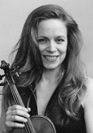

|  |
Rebekah Johnson began violin studies at 3 years of age and gave her first public performance 2 years later on a CBS television special playing the first solo in Bach's Double Violin Concerto. Shortly after that she won the Minneapolis Young Artist Competition with her performance of Mozart's Fourth Violin Concerto. She received Bachelor and Master of Music degrees from The Juilliard School where she was a student of Ivan Galamian and Sally Thomas. Ms. Johnson tours the United States and Europe as soloist and chamber musician and performs regularly at summer music festivals such as the Grand Teton Music Festival, Spoleto, Park City International Music Festival and the Roycroft Chamber Music Festival. She has premiered many contemporary works with such composers as Lukas Foss, Aaron Kernis, Philip Glass and John Adams.
Currently playing on a Niccolo Gagliano violin her playing has been hailed by the New York Times as "sweet and attractive…with a melancholy lyricism that was well supported by the performers" and the French press calls Ms. Johnson "…an exciting and insightful artist." Her recording of the 3 Partitas by J.S. Bach is available at Amazon.com. Highlights of the 2002-03 season include solo performances in December at the Bulawayo Festival in Zimbabwe as well as her New York debut recital at Carnegie Hall's Weill Recital Hall on April 18, 2003. Ms. Johnson is also the violinist of the acclaimed Leonore Trio.
In addition to her musical career she is also nationally recognized as a fine art photographer and several of her photographs of New York City and the Wyoming wilderness have been on exhibit at Lincoln Center in New York. She also spends time doing community service whether it is tutoring English in the New York public schools, fundraising for the Leukemia and Lymphoma Society or giving benefit concerts for events such as the Daniel Pearl Global Music Day.
|